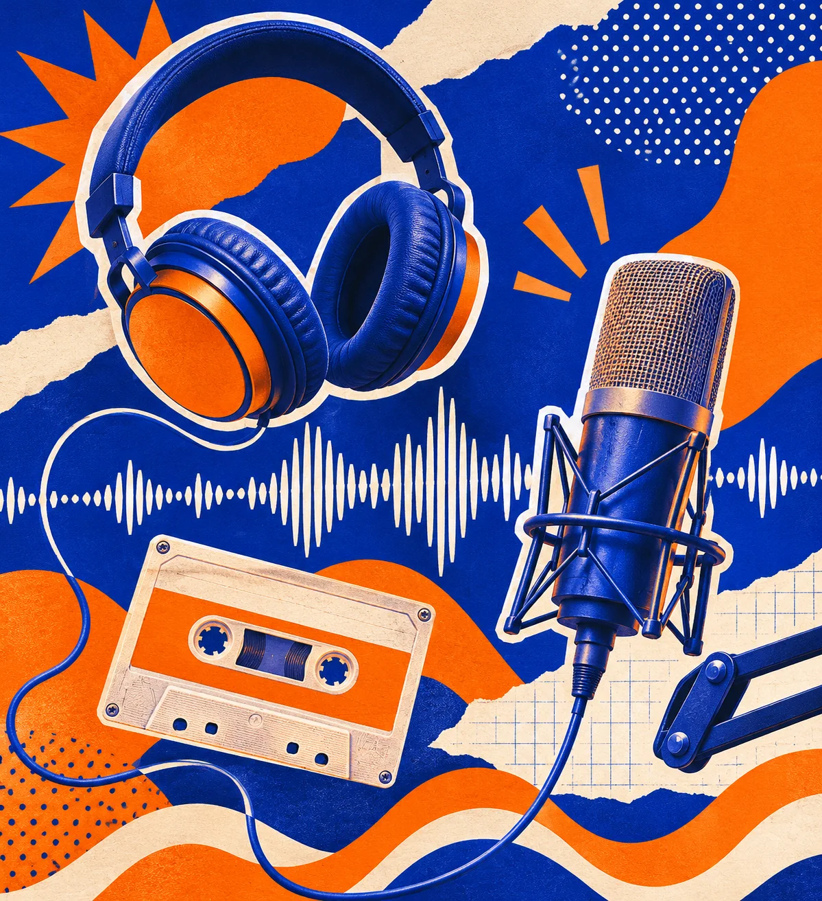

耳边电台
分类导航
成人百科 ↗
播客与声音 · 精选网址
把世界调到 喜欢的频率
播客、音乐和声音故事，陪你通勤、散步或安静独处。
成人百科
成人资讯入口 · 仅限年满 18 周岁者访问
↗
分类导航
选择感兴趣的入口，发现更多内容
听播客
小宇宙
↗
Apple Podcasts
↗
Spotify Podcasts
↗
Pocket Casts
↗
听音乐
网易云音乐
↗
QQ 音乐
↗
Bandcamp
↗
SoundCloud
↗
声音创作
Audacity
↗
Adobe Podcast
↗
Freesound
↗
Internet Archive 音频
↗
节目灵感
BBC Sounds
↗
NPR
↗
TED 音频
↗
哔哩哔哩
↗

在声音里遇见新故事
播客、音乐和声音故事，陪你通勤、散步或安静独处。